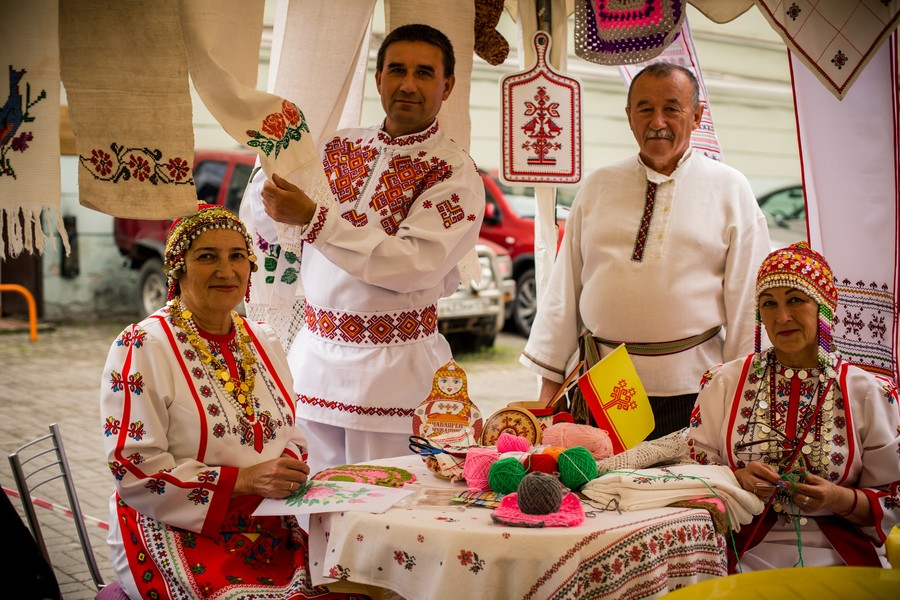

Корзина
Корзина
Корзина
Корзина
Настало время веселья и развлечений! Что может быть лучше, чем провести вечер в кругу близких людей, играя вместе в увлекательные игры? Вам не нужно искать дополнительные развлечения или покидать свой дом - достаточно выбрать игру, которую можно играть вместе с семьей или друзьями. Настольные игры - это классика жанра. Они предоставляют массу возможностей для веселого времяпровождения. Выберите игру, которую все участники знают и любят, или же попробуйте что-то новое и интересное. Разделитесь на команды и попробуйте выиграть в карточных играх, играх на доске или же настольных ролевых играх. Если вы предпочитаете компьютерные игры, не расстраивайтесь! Современные игровые консоли позволяют играть вместе в качественные игры в разных жанрах. Выберите многопользовательскую игру и присоединяйтесь к соревнованию вместе с близкими людьми. Независимо от того, какую игру вы выберете, главное - веселиться и наслаждаться временем, проведенным вместе. В играх можно победить и проиграть, но главное - это участие и отличное настроение. Вечера в кругу семьи с настольными или компьютерными играми - это отличный способ провести время вместе и создать новые приятные воспоминания.
Кино вечер - это прекрасная возможность для семьи провести время вместе и насладиться общим просмотром интересного фильма. Выбрать фильм, который понравится всем участникам, может быть непросто, но это отличный способ познакомиться с интересными картиными и провести время в кругу близких. Если вы не можете определиться с выбором фильма, то можно сделать тематический кино вечер. Например, посмотреть только фильмы одного жанра или режиссера. Это поможет создать атмосферу и ощущение целостности просмотра. Кроме того, кино вечер может быть хорошей возможностью для обсуждения фильма после просмотра. Каждый участник может высказать свое мнение о фильме, выразить свои эмоции и впечатления. Это поможет лучше понять друг друга и наладить более глубокие отношения. Выбирайте фильмы вместе, учитывая предпочтения каждого участника, и наслаждайтесь общим просмотром в уютной атмосфере дома.
Летние вечера на свежем воздухе - это прекрасный способ провести время в кругу семьи или друзей. И одним из лучших вариантов для этого является уютный вечерний пикник. Если погода позволяет, можно организовать пикник прямо на своей террасе или балконе, наслаждаясь теплым летним воздухом и красивым закатом. Для создания идеальной атмосферы на пикнике, необходимо подготовить несколько простых, но вкусных блюд. Сэндвичи, фрукты, овощи и снеки - всё это подойдет для пикника. Также не забудьте про напитки, ведь они помогут вам остаться освеженными и готовыми к новым приключениям. Выбор места и декорирование также очень важны. Если у вас есть гамак или ковер, установите его на газоне или на палубе. Вы можете использовать цветы, свечи или даже фонарики, чтобы создать уютную атмосферу. Когда всё готово, настало время для развлечений! Предложите игры, музыку или книги, которые могут помочь расслабиться и насладиться вечером. Это может быть что-то простое, например, настольные игры или карточные игры, или что-то более активное, например, фрисби или волейбол. Вечерний пикник - это прекрасный способ насладиться теплым летним вечером в кругу близких людей. Попробуйте его сегодня и создайте незабываемые воспоминания, которые будут с вами всю жизнь.

Кулинарные эксперименты - это отличный способ провести время в кругу семьи. Приготовьте что-то новое и экспериментируйте с ингредиентами, которые вы никогда раньше не пробовали. Это может стать интересным опытом, который вы сможете разделить вместе. Посмотрите рецепты в интернете или в книгах по кулинарии, и выберите то, что понравится всем. Не забудьте о подготовке ингредиентов и оборудования, чтобы создать удобную и приятную атмосферу в кухне. Помимо того, что вы научитесь готовить новые блюда, вы также сможете получить удовольствие от процесса приготовления и прекрасно провести время вместе.
Вечер, посвященный творчеству, может стать отличным способом провести время в кругу семьи или друзей. Соберите всё необходимое для создания произведений искусства: кисти, краски, глину, бумагу, ножницы, клей и прочие материалы. Вы можете выбрать любой вид творчества, который вам близок, и начать творить в свободном формате. Это может быть рисование картины на холсте, создание скульптуры из глины, коллажа из фотографий или чего-то еще. Кроме того, вы можете устроить небольшой конкурс и выбрать лучшее произведение искусства!
Викторина - это отличный способ провести интересный и увлекательный вечер в кругу семьи или друзей. Для этого нужно подготовить вопросы на разные темы, например, историю, литературу, кино, науку и технологии, спорт и т.д. Вы можете разделиться на команды или играть все вместе, в зависимости от количества участников и предпочтений. Участники будут соперничать, чтобы набрать больше очков, и это может стать отличным стимулом для изучения новых знаний. Викторина может быть не только веселым времяпрепровождением, но и отличной возможностью узнать что-то новое и расширить свой кругозор.